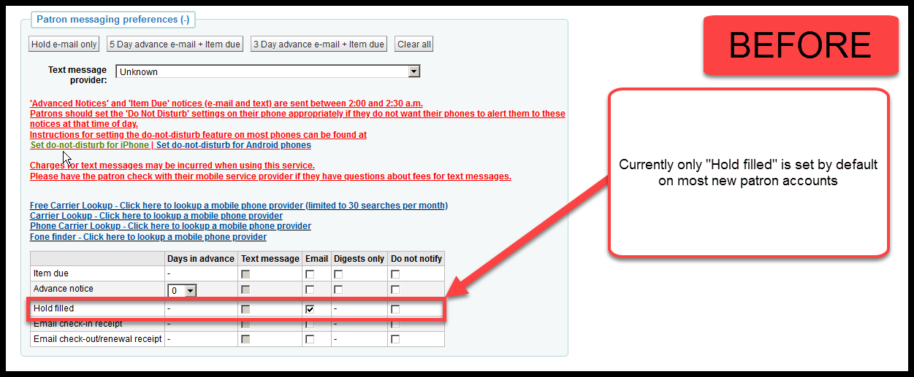
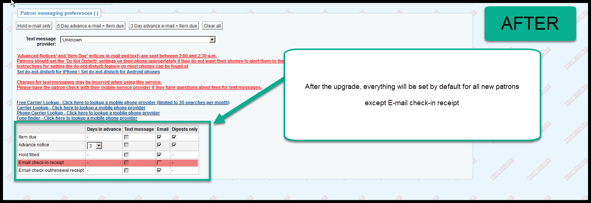
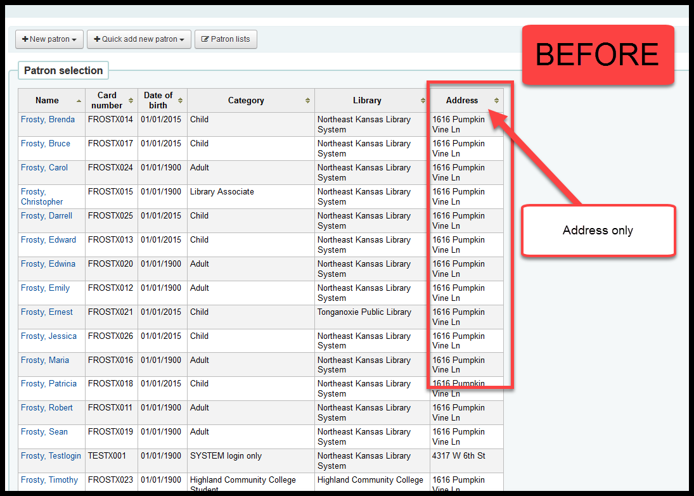
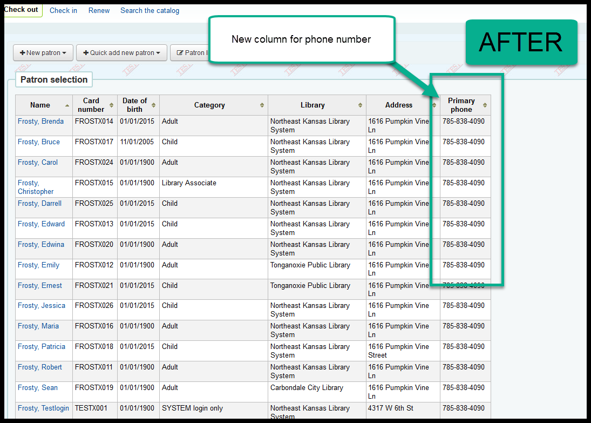
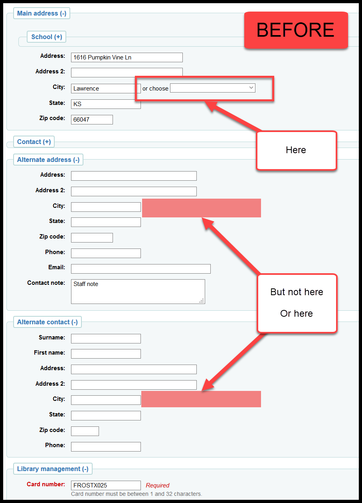
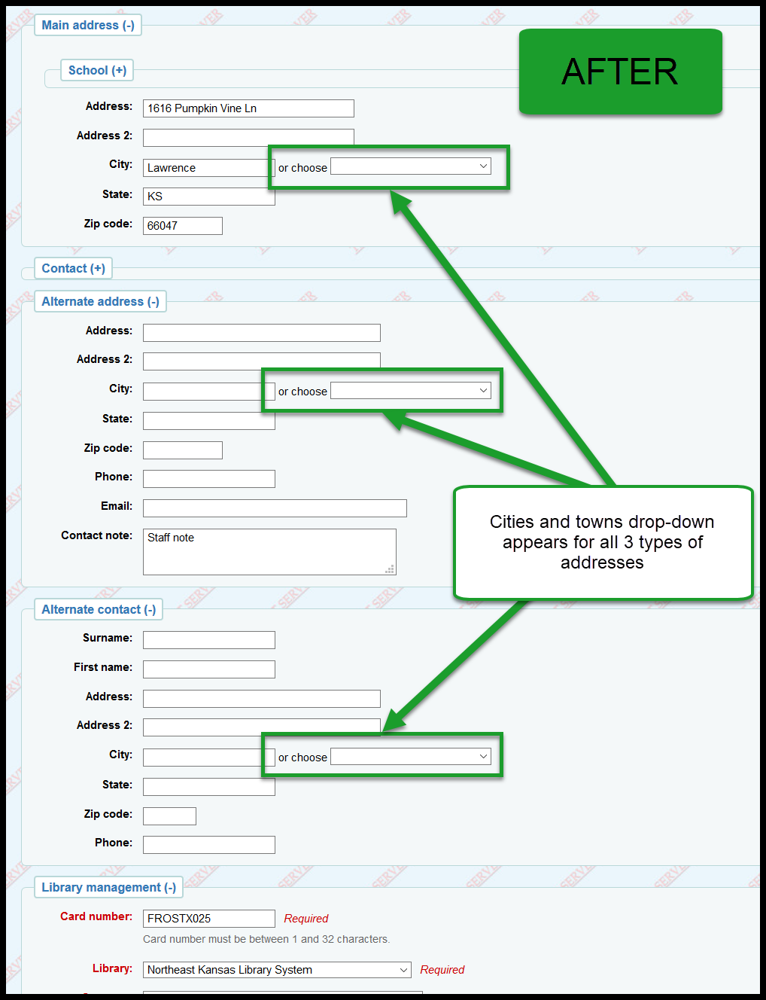
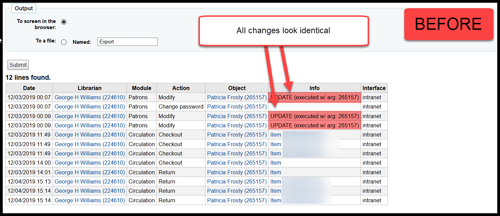
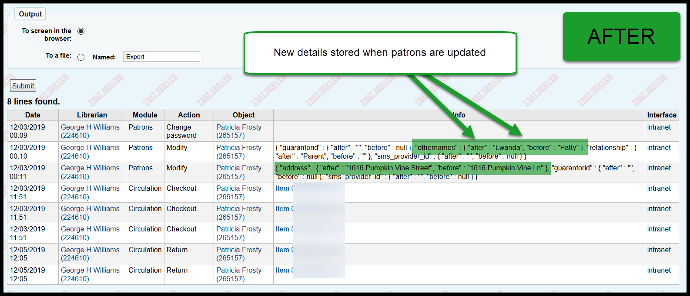

Koha Upgrade - Patron changes¶
Patron messaging preferences defaults¶
Since time immemorial, Next Search Catalog has had the default settings for a patron’s messaging preferences only set to automatically send patrons a notification when requests arrive and are ready to be picked up.
Beginning with the upgrade on January 4, 2020, all new patrons will have their default messaging preferences set to send them the following messages via e-mail:
- Item due: Email digest
- Advanced notice: 3 days, Email digest
- Hold filled: Email
- Email check-out/renewal receipt: Email
Here are some screen shots:
Before
After:
Frequently asked questions¶
- Q: Will this affect existing patrons?
- A: No. This will only affect patrons created after January 4, 2020.
- Q: What if a patron doesn’t have an e-mail address?
- A: If you don’t enter an e-mail address for the patron, none of these settings have any effect on the patron’s account.
- Q: What if a patron has an e-mail address but doesn’t want us to send them any e-mail?
- A: If the patron doesn’t want us to send any e-mail, don’t enter their e-mail address.
- Q: What if a patron doesn’t want some of these e-mails but not all of these e-mails?
- A: Un-check the boxes next to the messages the patron doesn’t want to get.
Email and Digests only¶
For the “Item due” and “Advanced notice” messaging preferences, if staff check “Email,” “Digests only” will also be checked automatically.

In the past it has been possible to check the “Digests only” checkbox without also checking the “Email” checkbox. When “Digests only” is checked and “Email” is not, the patron will not receive any e-mail for that notice. Because many staff don’t understand this, we added code that automatically checks the “Digests only” checkbox whenever “Email” is checked.
Frequently asked questions¶
- Q: What does “Digests only” mean?
- A: In the case of the “Item due” and “Advanced notice,” if a patron checks out 25 books, when those items are due, the patron will receive 1 e-mail saying that all 25 of those items are due.
- Q: What if “Digests only” is turned off?
- A: In the case of the “Item due” and “Advanced notice,” if a patron checks out 25 books, and “Digests only” is turned off, the patron will receive 25 separate e-mails saying those items are due - 1 e-mail for each item.
- Q: If I can no longer control the “Digests only” checkboxes, why can I still see the “Digests only” column.
- A: We are working on removing that entire column from the screen.
- Q: Can patrons still modify their own “Digests only” settings.
- A: Yes. And we are working on that too.
- Q: Why aren’t there “Digests only” options for the “Email check-in receipt” and “Email check-out/renewal receipt” notices?
- A: “Email check-in receipt” and “Email check-out/renewal receipt” digest automatically with one caveat - they are sent every 15 minutes at X:00, X:15, X:30, and X:45. So, if a patron is checking out 50 items and you check 45 of those items out at 10:14 a.m. and the last 5 at 10:15 a.m., the patron will receive 1 e-mail with 45 items at 10:15 a.m. and a second e-mail with the additional 5 items at 10:30 a.m.
- Q: Why isn’t there a “Digests only” option for the “Hold filled” message.
- A: Currently Koha does not have the ability to digest this message. A development is underway that would add that function to the system. When completed, this development would work similarly to the self-digesting “Email check-in receipt” and “Email check-out/renewal receipt” once-every-15-minutes schedule.
Patron search results¶
After the upgrade, the patron’s phone number will be included in search results when searching for patrons in check-out.
Here are some screen shots.
BEFORE:
AFTER:
Frequently asked questions¶
- Q: If some staff members are blocked from seeing patron details, doesn’t this allow them to see confidential data they shouldn’t be able to see?
- A: Yes, it does. We’re working on correcting that.
Cities and towns¶
Currently Koha allows you to select a city/state/zip code combination from a drop-down list when adding a patron’s address. Some libraries use “Alternate address” and “Alternate contact” which both have address fields, but do not have a drop-down for a city/state/zip code combination.
After the upgrade, the drop-down for city/state/zip code combinations will be added to those addresses.
BEFORE:
AFTER:
Patron logs¶
There are changes in Koha 19.05 that adds more information to the patron logs.
Currently if you change a patron’s name or contact information or anything else on their account, the only thing recorded in the patron logs is a note that the account was updated. After the upgrade, there will be details about what was changed.
The caveat concerning this change is that we can only see changes made within the previous 60 days.
Here are some examples of what this looks like in the log viewer.
BEFORE:
AFTER:
Frequently asked questions¶
- Q: Can we see the logs?
- A: Currently, no. Now that there is useful information in the patron logs, though, we will write reports to help you access the logs.
- Q: Why can’t the logs show changes more than 60 days old?
- A: A lot of data is logged. Changes to item records, bibliographic records, patron records, and circulation records are all logged. Currently we have a script running every night to delete any lines in the log files more than 60 days old in order to keep the log files from getting so large that they would slow down the entire system.